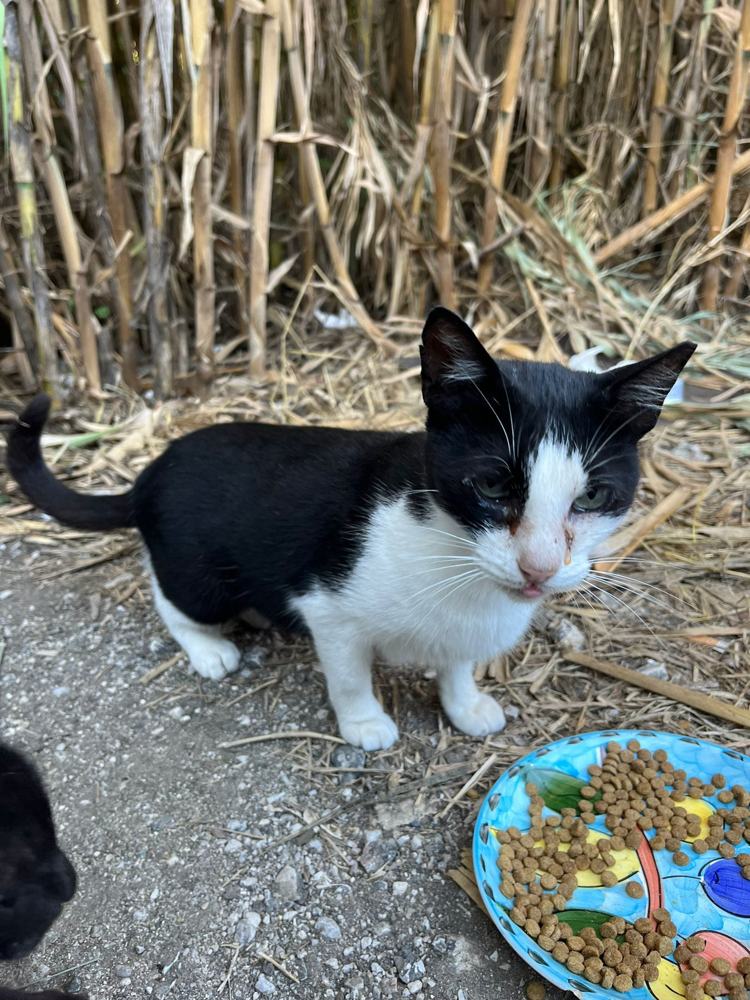
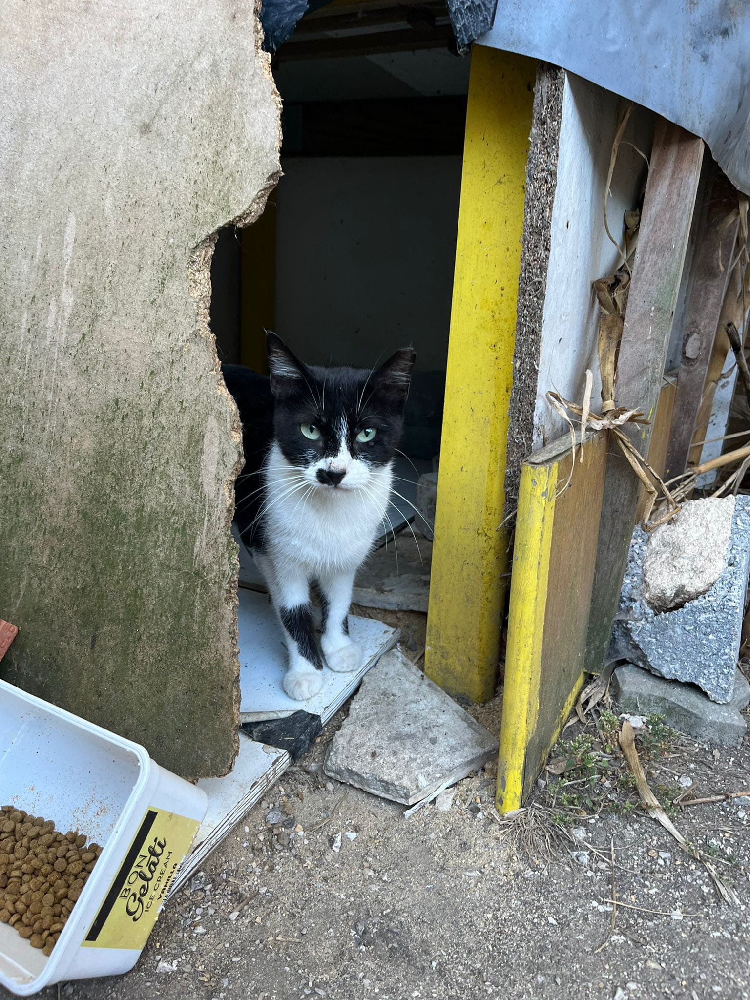
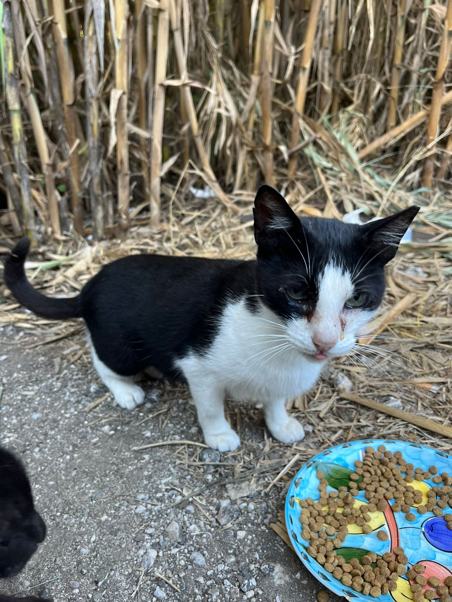
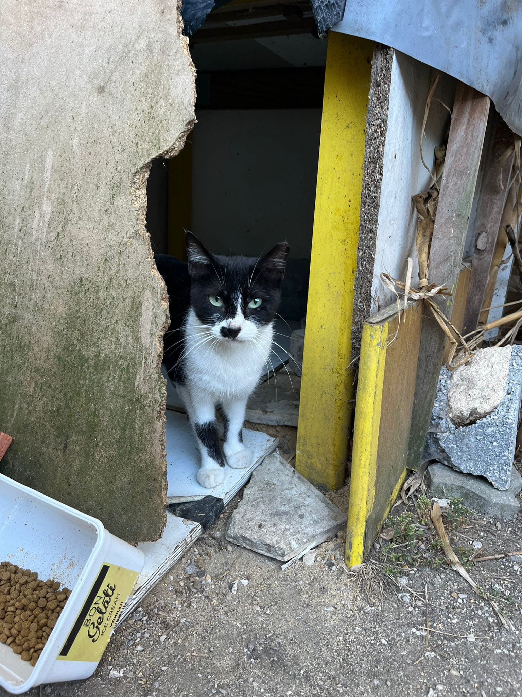

Faça agora sua doação e ajude a salvar os animais.
MbWay +351 926071127
Ajude a Colônia de Gatos na Rua da Liberdade
As ações são fundamentais para garantir a alimentação adequada, tratamentos veterinários regulares, vacinação, e, em muitos casos, medicamentos essenciais. Além disso, parte do valor arrecadado também é destinada a esforços de castração e adoção, permitindo que alguns desses gatinhos encontrem um novo lar
Ao contribuir, você está fazendo parte de uma corrente do bem, ajudando a transformar a vida desses animais. Qualquer valor faz a diferença e será utilizado para garantir que esses felinos continuem recebendo o que precisam para viver com dignidade e saúde.
Seja um protetor desses gatinhos!.


 


